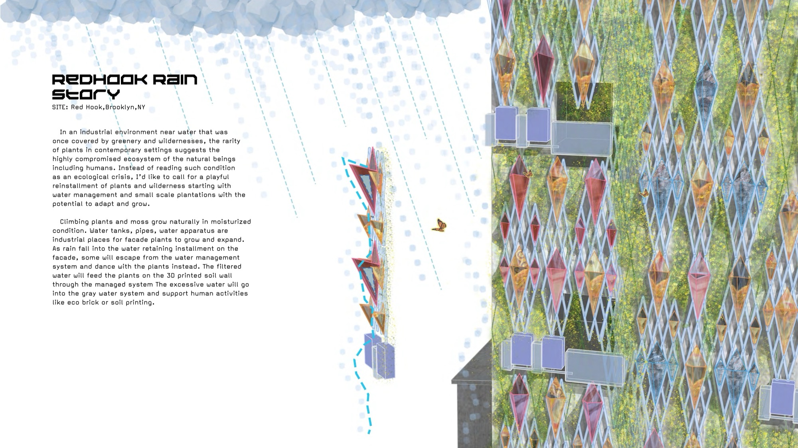
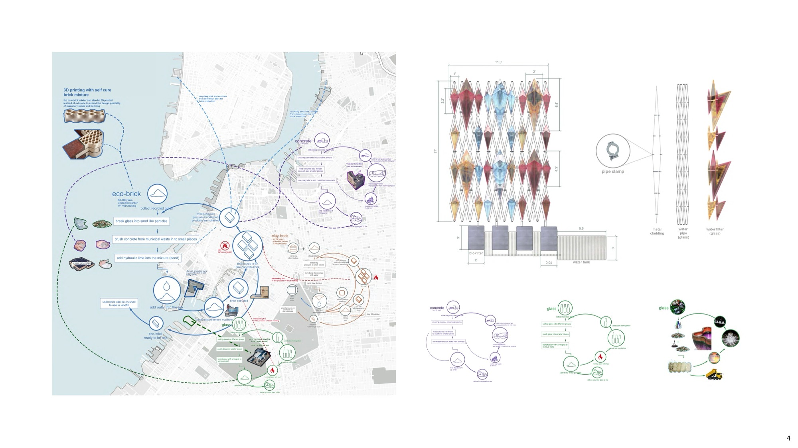
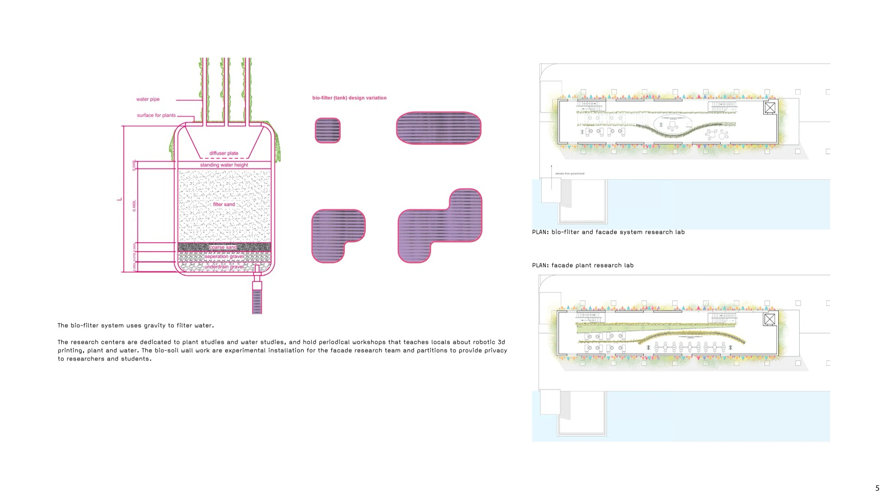
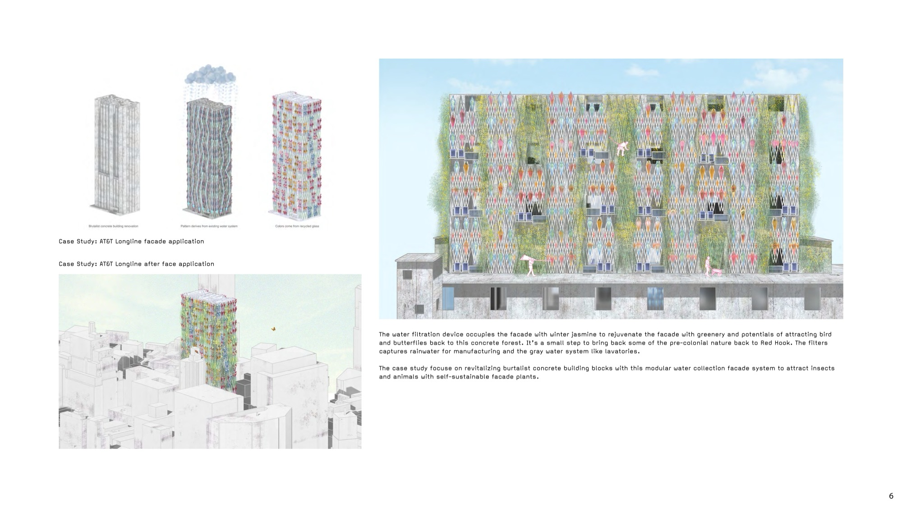
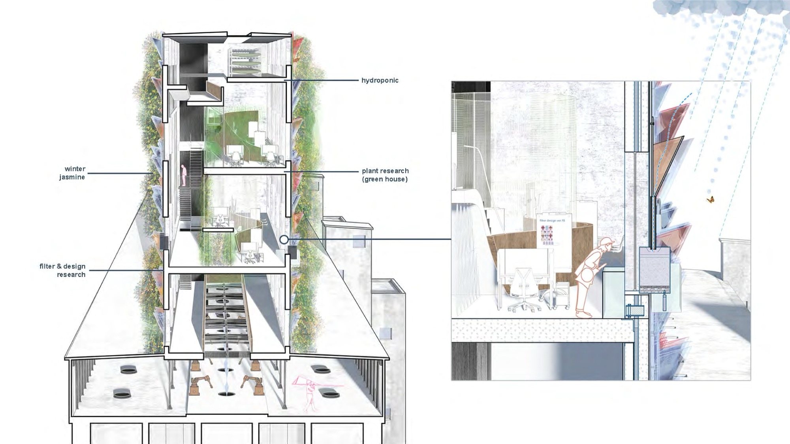
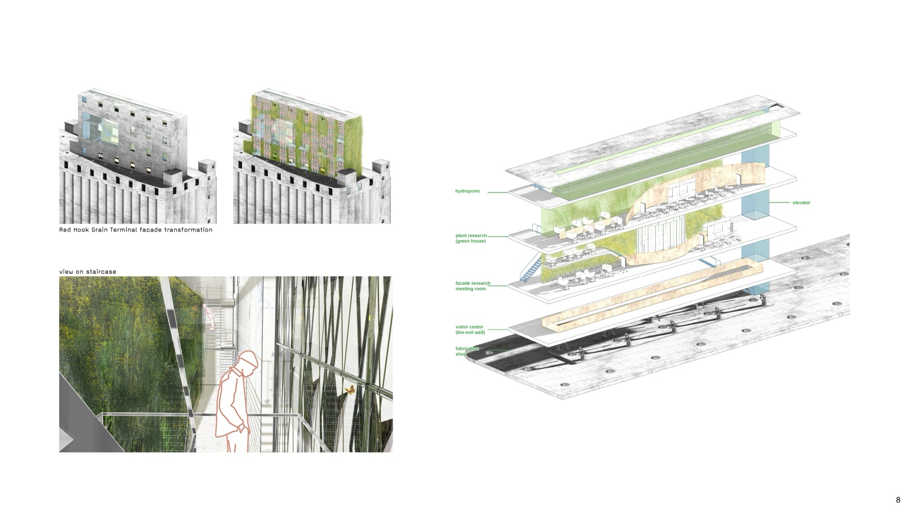
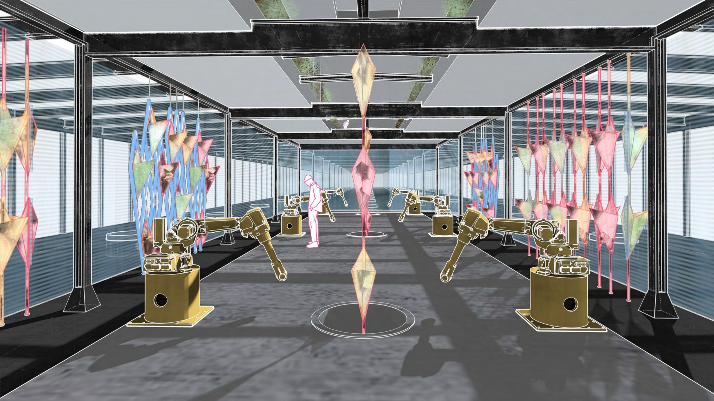

Projects
In an industrial environment near water that was once covered by greenery and wildernesses, the rarity of plants in contemporary settings suggests the highly compromised ecosystem of the natural beings including humans. Instead of reading such condition as an ecological crisis, I'd like to call for a playful reinstallment of plants and wilderness starting with water management and small scale plantations with the potential to adapt and grow.
Climbing plants and moss grow naturally in moisturized condition. Water tanks, pipes, water apparatus are industrial places for facade plants to grow and expand. As rain falls into the water retaining installment on the facade, some will escape from the water management system and dance with the plants instead. The filtered water will feed the plants on the 3D printed soil wall through the managed system. The excessive water will go into the gray water system and support human activities like eco brick or soil printing.


The bio-filter system uses gravity to filter water. The research centers are dedicated to plant studies and water studies, and hold periodical workshops that teach locals about robotic 3D printing, plant and water. The bio-soil wall works are experimental installations for the facade research team and partitions to provide privacy to researchers and students.

Plans: bio-filter and facade system research lab / facade plant research lab
The water filtration device occupies the facade with winter jasmine to rejuvenate the facade with greenery and potentials of attracting bird and butterflies back to this concrete forest. It's a small step to bring back some of the pre-colonial nature back to Red Hook. The filters capture rainwater for manufacturing and the gray water system like lavatories.
The case study focuses on revitalizing brutalist concrete building blocks with this modular water collection facade system to attract insects and animals with self-sustainable facade plants.

Case Study: AT&T Longline facade application


Red Hook Grain Terminal facade transformation — view on staircase
